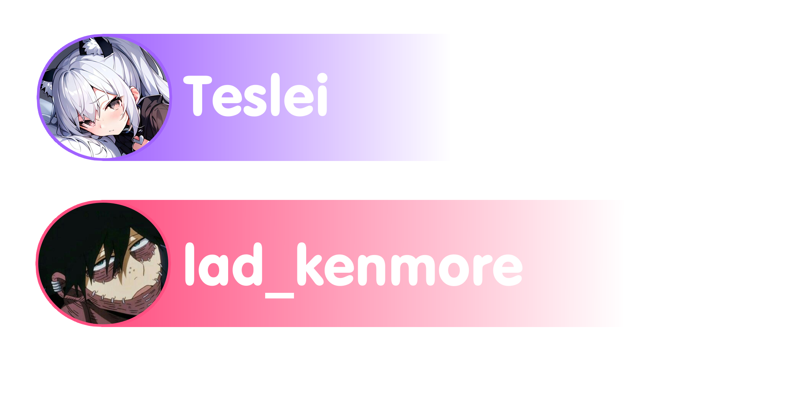

Ивент "Снайперы"
Игроки разбегаются по карте и после команды они начинают сражаться друг с другом. Но у них есть цель, им нужно убить определённую цель. Игроки могут кооперироваться чтобы убить цель, но победа за считается только тому, кто её убил. Цель в свою очередь может убивать игроков, если на неё напали. Игрок который убил цель получает роль "Разрешение на VoiceMod и Soundpad" на дискорд сервере.
Организаторы
